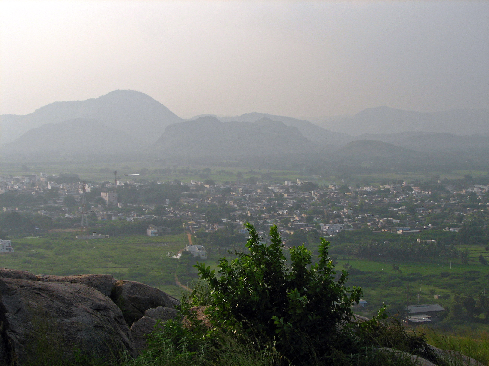

Puttur, Andhra Pradesh This small village in Andhra Pradesh is popular for its agriculture, mangroves and the prominent silk business. The traditional homes are a beautiful sight and staying in one of these are eye openers on the healthy lifestyle of village folk. The people are involved in various facets of silk saree weaving. Enjoy the grand tour of the silk saree making process, the warm hospitality of the people and the many temples that dot this little village. You can also explore the surrounding regions for a picnic or trek.

Mail your local guide